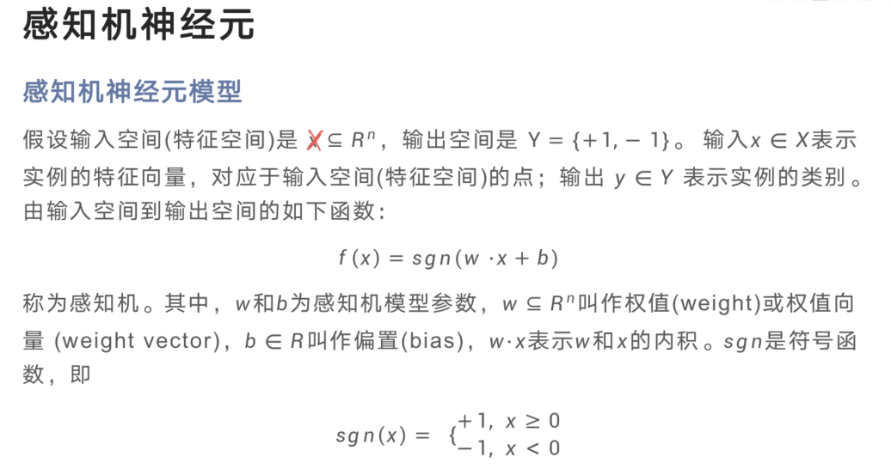
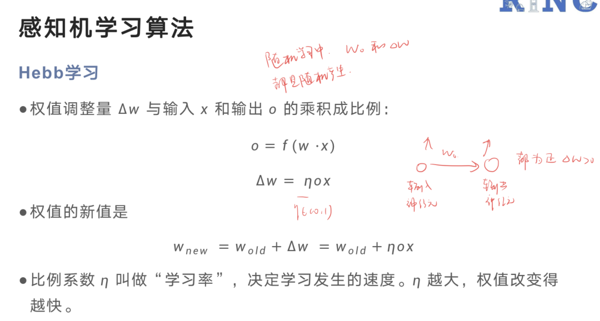
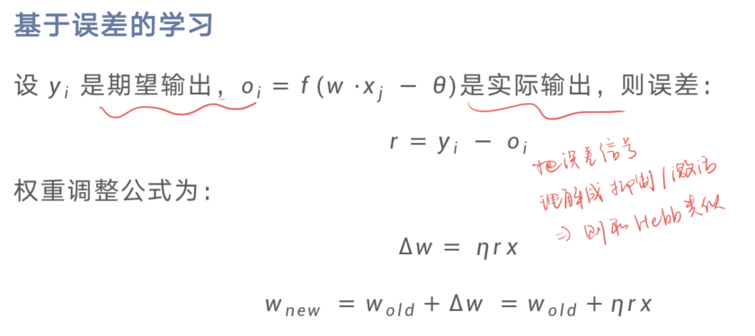
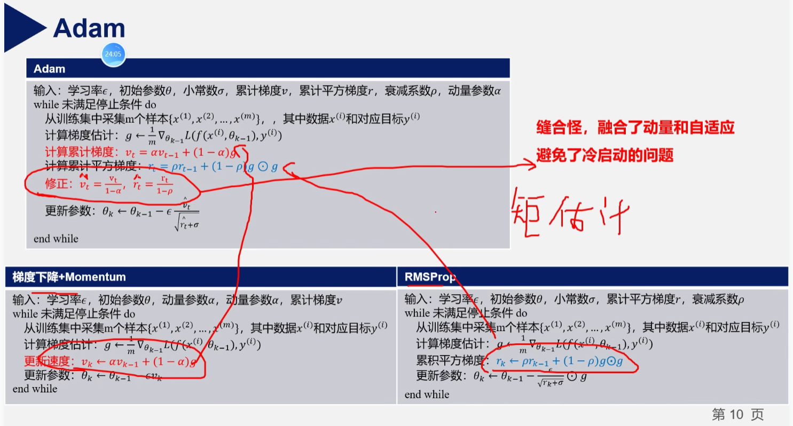
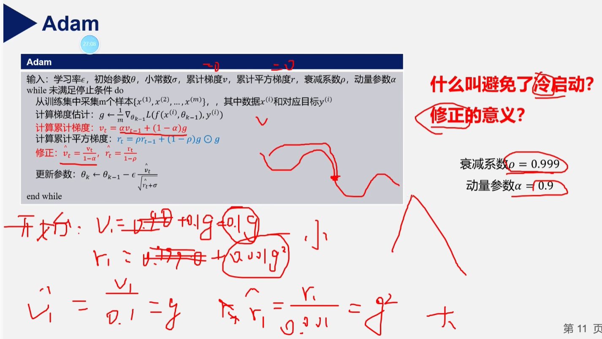
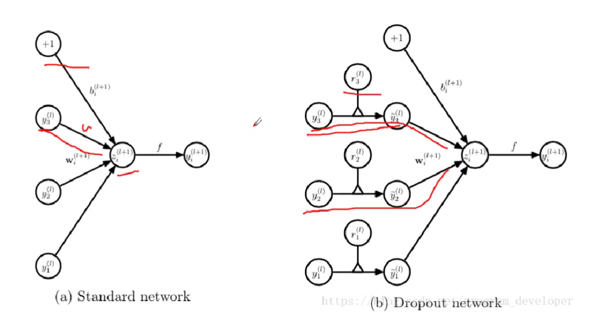
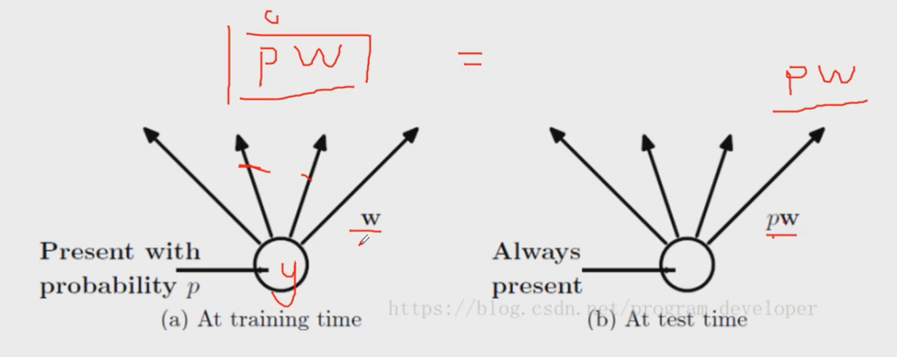
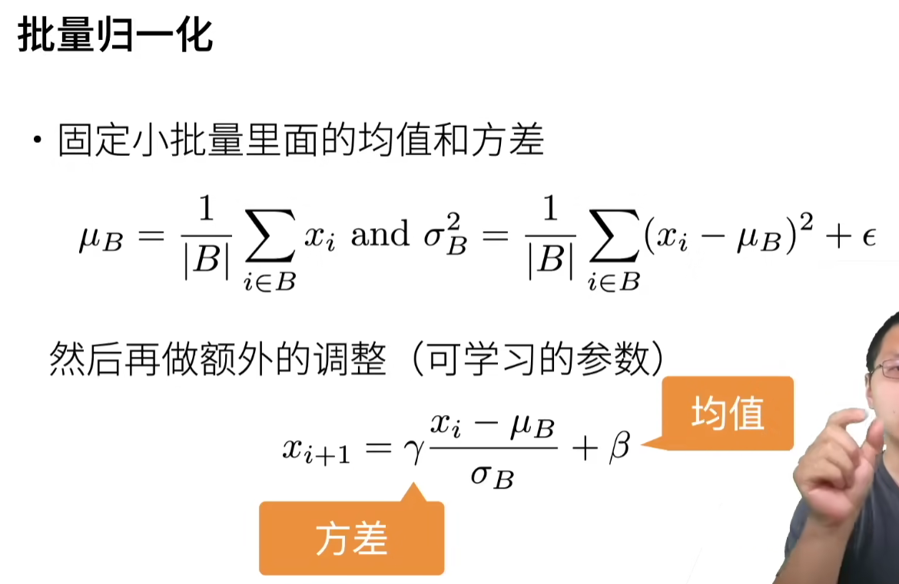
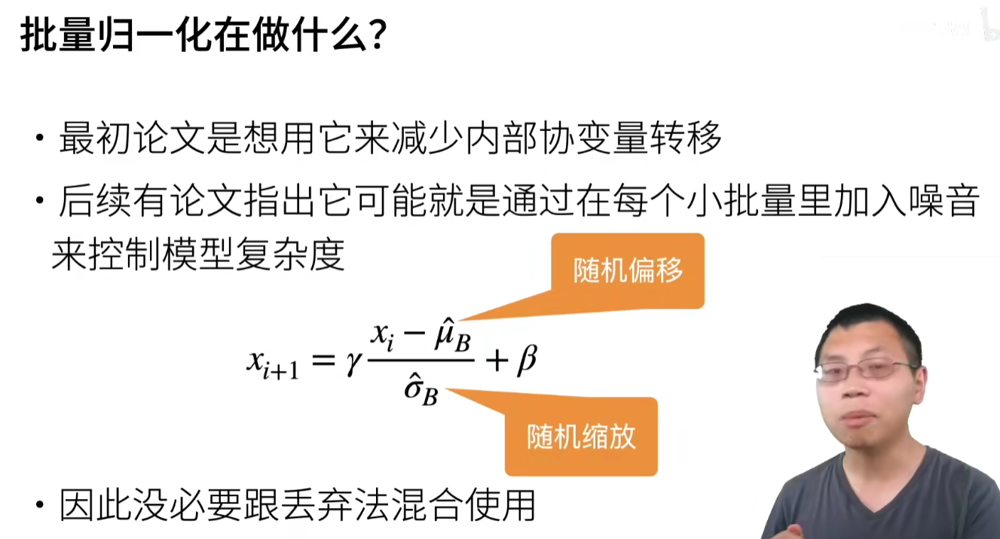

神经网络笔记
第二讲 神经元
01 神经元模型
- 生物神经元信号传递过程：其他神经元信号（输入信号）通过树突传递到细胞体，细胞体把从其他多个神经元传递进来的输入信号进行合并加工，然后再通过轴突前端的突触将输出信号传递给别的神经元
- MP神经元
- 多输入单输出
- 分兴奋性输入、抑制性输入
- 空间整合特性、阈值特性
- 输入输出间有时延，取决于突触间传播的延迟
- 忽略时间整合作用和不应期（不能连续激发）
- 二值网络（0/1）
- 权为正：刺激；权为负：抑制
- 全或无：只有激发或不激发
- 绝对抑制
- 输出变为兴奋状态：接收到k个或者更多的刺激输入，没有抑制输入（有一个抑制信号就抑制？）
02 神经元的组成成分
-
阈值函数
-
Sigmoid函数：输入（-∞,+∞）映射到（0,1）
- 非线性压缩函数
- 缺点：
- 非中心化。
- 输出都为正，导致zigzag式更新梯度。相当于把上游梯度的符号传回来，这意味着所有关于w的梯度全为正值或者全为负值，那么它们就会总是朝着同一个方向移动。https://blog.csdn.net/weixin_38646522/article/details/79534677
- 反向传播时，很容易就会出现梯度消失的情况
- 解决：ReLU，batch normalization（每个channel上所有实例所有feature的均值，只保留了channel维度）
- 输出值恒为正值，随层数叠加，会产生累计偏差（？）
- 非中心化。
-
Tanh函数
- 原点上对称，均值为0
- 和sigmoid一样，网络层数过多会导致梯度消失
-
ReLU函数
- 缓解梯度消失，收敛速度快
- 存在神经元坏死现象，负半轴中会出现梯度不能更新
-
乘法神经元
- 累乘替代MP中累加，，
- 很好拟合多项式分布的输入，在时间序列预测上效果较好
03 感知机神经元
-
MP神经元局限：权值事先给定，不能自动确定权值，没有学习
-
感知机神经元：在MP基础上提出学习的概念，设定训练样本和期望输出，通过学习调整权值
- 
-
感知机学习算法
-
随机学习
- 效率低，但简单，实现容易，能找到全局最优解
-
Hebb学习
-
“突出修正”假设/Hebb学习规则：神经元突触前膜电位与后膜电位同时为正（同时处于兴奋），突触传导增强（连接强度应增强）
- 
-
Hebb学习可用来无监督学习。
-
有监督学习学决策边界，无监督学习学样本的分布，学出来的是代表点
-
-
基于误差的学习
- 
-
-
人工神经元就是一个具有记忆功能的输入权值化的“多输入-单输出”“整合-激发”装置
04 神经元的应用
-
线性回归
- 最小二乘法：从损失函数求导，直接求得数学解析解
- 神经元方法：用导数传递误差，再通过迭代方法（用近似解）逼近真实解
-
单输入-单输出神经元应用
-
多输入-单输出神经元应用
-
单个神经元的局限：线性不可分情形
第五讲 神经网络模型优化
01 学习率
- 学习率调整方法
- 学习率衰减：一开始设置大一些保证收敛速度，当收敛到最优点附近，应该让学习率变小一些，避免震荡
- 分段常数衰减、逆时衰减、指数衰减、自然指数衰减、余弦衰减
- 学习率预热
- 原因：刚开始训练时，模型的权重是随机初始化的，此时若选择一个较大的学习率，可能带来模型的不稳定（震荡），为了让初始阶段的学习更加稳定，使用学习率预热
- 基本思路
- 在初始的几轮，采用较小的学习率
- 梯度下降到一定程度之后，再恢复到初始设置的学习率
- 周期变化
- 原因：梯度下降方法容易陷入局部最小值或鞍点，这个时候根据经验应当适当增加学习率来逃离。虽然有可能损失网络收敛稳定性，但长远来看能找到更好的局部最优解
- 周期性学习率调整
- 循环学习率（CLR）
- 让学习率在一个区间内周期性的增大和缩小
- 带热重启的随机梯度下降（SGDR）
- 学习率会每间隔一定迭代后重新初始化为预先设定好的值，并继续衰减
- 循环学习率（CLR）
- 自适应学习率调整
- AdaGrad
- 在训练过程中动态调整学习率，对不同参数根据累计梯度平方和更新不同学习率
- 梯度一直变化较大的参数，学习率下降也较快，即高频特征使用较小学习率
- 梯度一直变化较小的参数，学习率下降也较慢，即低频特征使用较大学习率
- 因为累加性，学习率的趋势是不断衰减，这也符合迭代后期靠近极值点时需设置较小的学习率
- 缺点：学习率不断衰减，在迭代早期衰减过快可能直接导致后期收敛动力不足
- RMSProp
- 添加衰减因子 ，在学习率更新过程中权衡过去与当前的梯度信息，减轻了因梯度不断累计导致学习率大幅降低的影响，防止学习过早结束。
- Adam算法
- 融合了动量法和RMSProp算法的思想，不但使用动量作为参数更新方向，而且可以自适应调整学习率
- 加入了修正，避免冷启动问题
- AdaGrad
- 学习率衰减：一开始设置大一些保证收敛速度，当收敛到最优点附近，应该让学习率变小一些，避免震荡
深度学习中的优化器
-
梯度的方向 是函数在给定点上升最快的方向
-
SGD
-
SGD+Momentum
- 考虑之前的惯性
- 梯度累加的过程中，震荡的方向的梯度互相抵消，梯度小的方向逐渐累加
-
AdaGrad
-

-
调节的是学习率，前面几种调节的是梯度
-
-
RMSProp
-
AdaGrad的累积平方梯度是一直在累加的，即前面走的路都记得
-
-
Adam
- 

02 损失函数
2.1 回归损失函数
- 平方误差损失与绝对值误差损失
- MAE 对于异常点更加鲁棒
- 在有异常点的情况下，平方误差会扩大误差，因此平方误差损失函数对异常点更敏感
- MSE 通常比 MAE 可以更快地收敛
- 绝对值误差损失函数更新梯度始终一样，不利于模型收敛
- MAE 对于异常点更加鲁棒
- Huber 损失
- 结合了平方误差损失和绝对值误差损失优点
- 误差较小时：平方误差损失
- 误差较大时：绝对值误差损失
- 缺点：超参数需要人工确定
- 结合了平方误差损失和绝对值误差损失优点
2.2 分类损失函数
- 分类错误率
- 均方误差
- 梯度受 控制，可能很小
- 交叉熵损失
- 权重学习的速度受到 ，也就是输出值和目标值的误差的控制。更大的误差带来更快的学习速度，避免了均方误差“学习缓慢”的问题
03 正则化
-
L1和L2正则化
- L1正则化使参数趋近坐标系（零值）
- L2正则化使参数减小
- L1正则每次梯度更新时，梯度为1或-1，导致L1稳定向0靠近；L2正则随着变量靠近0，其梯度逐渐减小
- L1正则可能为0，L2正则却几乎不可能
- 所以带L1正则项训练的模型更容易得到稀疏解
-
Dropout
-
在训练时，以概率 随机丢弃部分神经元
- 
-

也可以在训练的时候除以p，测试的时候就不用乘p了
-
避免过拟合原因
- 相当于取平均的作用，取每次丢弃后子网络的平均结果
- 降低神经元之间的敏感度，增加整体鲁棒性
-
-
提前停止
- 验证集错误率基本不下降时或有反增趋势时，可以提前停止训练
04 归一化
-
数据归一化
- min-max归一化：将结果映射到 [0,1] 之间
- Z-score归一化（标准归一化)：
-
归一化
- 如果前面发生了一个小偏移，到了越深的层这个偏移就会被扩大。这样是不利于网络的训练
- 后面介绍的归一化方法主要为了稳定层输入的分布，来改善神经网络训练
-
常见归一化方法
-
批归一化（Batch Normalization，BN）
-
靠近输出层收敛快，但靠近输入层收敛慢。每一层分布弄成一样，可以提高收敛速度
-
缺点：使用小的batch size时不稳定。因为当batch值很小时，计算的均值和方差不稳定
- 
- 
-
-
层归一化（LN）
- 思路：对中间层的所有神经元进行归一化
-
- Batch Norm 是对三个通道分别进行归一化
- Layer Norm 是对4张图片分别进行归一化
- Instance Norm 是每张图片的每个通道层分别进行归一化
- Group Norm 对几个通道分个组，每个组进行归一化
- BatchNorm是在样本维度进行归一化(一个批次内不同样本的相同特征计算均值和方差)，而LayerNorm是在特征维度进行归一化(同一个样本的不同特征计算均值和方差)。
- 优点
- 提高精度
- 加快训练速度
- 防止梯度消失（sigmoid）
- 防止过拟合（不会对某一个特征着重训练）
05 参数初始化
- 全0初始化
- 初始化需要避免“对称权重”现象（回传梯度相等）
- 权重矩阵初始化
- 基于固定方差的参数初始化
- 主要思想：从一个固定均值（通常为0）和方差的分布中采样来生成参数的初始值
- 方法一：对于任意网络权值 ，从区间 [-r, r] 的均匀分布中随机选取初始值
- 方法二：对于任意网络权值 ，从均值为0、方差为常数k的高斯分布中随机选取初始值
- 缺点：当神经网络的层数增多时，会发现越往后面层的激活函数的输出值几乎都接近于0，极易出现梯度消失（方差大，离散程度大）
- 基于方差缩放的参数初始化
- 主要思想：为了缓解梯度消失或爆炸问题，我们尽可能保持每个神经元的输入和输出的方差一致，根据神经元的连接数量来自适应地调整初始化分布的方差
- Xavier 初始化
- 为了使得在经过多层网络后，信号不被过分放大或过分减弱，尽可能保持每个神经元的输入和输出的方差一致。作为折中，同时考虑信号在前向和反向传播中都不被放大或缩小，可以设置为：
- 优点：激活函数用 tanh（双曲正切函数），每层输出值分布服从高斯分布
- 缺点：Xavier 初始化对 ReLU 激活函数的效果不佳，多层后逐渐趋向于0
- He 初始化
- 当第 层神经元使用 ReLU 激活函数时，通常有一半的神经元输出为0，因此其分布的方差也近似为使用恒等函数时的一半。
- 正交初始化
- 主要思想：正交初始化可以避免训练开始时就出现梯度消失或梯度爆炸现象
- 启发式规则：初始化权重矩阵为正交矩阵，满足
- 步骤：
- 用均值为0方差为1的高斯分布初始化一个矩阵
- 将这个矩阵用奇异值分解得到两个正交矩阵，使用其中之一作为权重矩阵
- 实际使用中通常需要将正交矩阵乘以一个缩放系数
- 基于固定方差的参数初始化
06 网络预训练
-
网络预训练是采用相同结构的，并且已经训练好的网络权值作为初始值，在当前任务上再次进行训练
-
为什么使用网络预训练
- 为了能够在更短时间内训练得到更好的网络性能
- 相似的任务之间，训练好的神经网络可以复用，通常作为特征提取器
-
常用的预训练方法
- 无监督预训练
- 玻尔兹曼机
- RBM是生成式神经网络，训练目标是最小化RBM模拟的数据分布与数据实际分布之间的对比散度
- 逐层预训练方法：将多个预训练好的RBM堆叠起来就可以作为网络的初始化结果
- 堆叠方式：将训练好的上一层输出作为下一层的输入
- 由多层受限制玻尔兹曼机堆叠起来的网络叫做深度信念网络（DBN）
- 自编码器（AE）
- 无监督的全连接网络结构，其训练目标为重构误差最小化
- 编码器：高维数据转换成为低维特征编码
- 解码器：还原原始数据
- 逐层预训练方法：前一个AE隐藏层的输出作为后一个AE的输入
- 玻尔兹曼机
- 有监督预训练
- 迁移学习：已经训练好的网络作为自己网络的权重初始值
- 即使网络顶层的分类器最终需要重新训练，中间网络层作为特征提取器，可以直接利用
- 使用预训练模型的方式
- 直接作为特征提取网络
- 作为初始化模型进行微调
- 无监督预训练
本博客所有文章除特别声明外，均采用 CC BY-NC-SA 4.0 许可协议。转载请注明来自 Seline's blog！